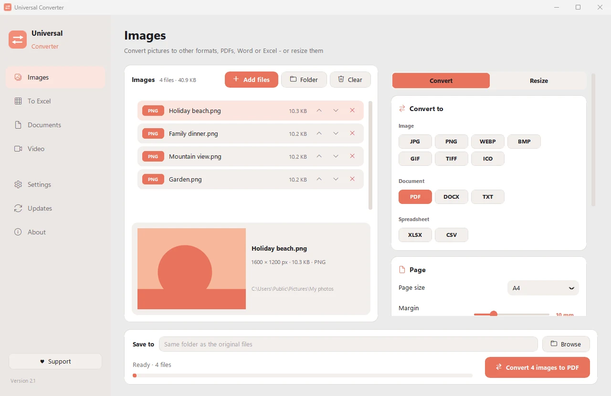
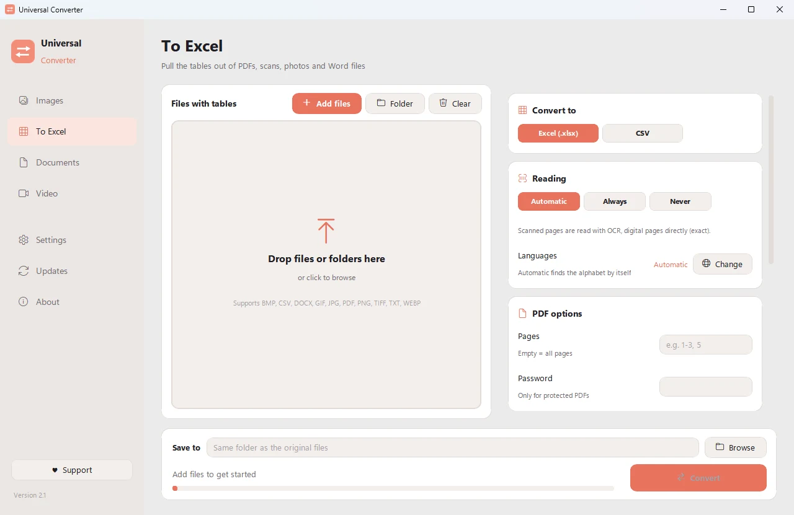
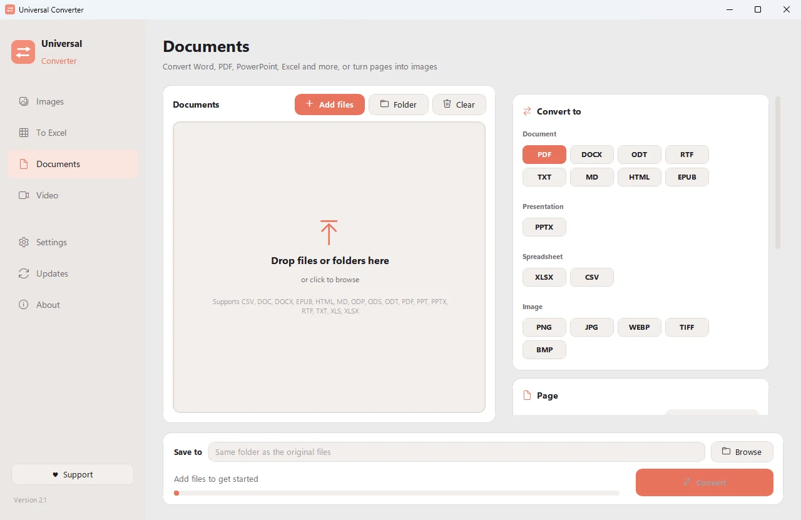
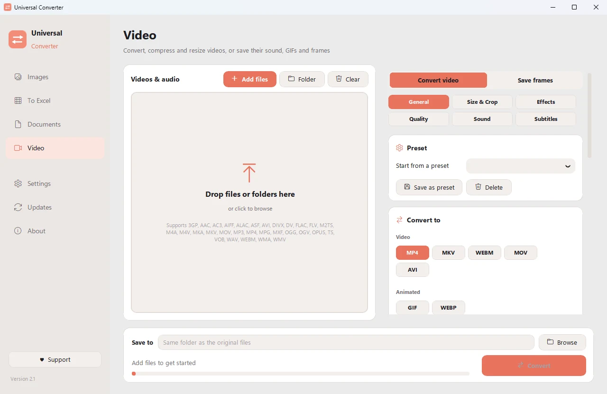

Convert your files on your own computer
Images, documents, video and audio, PDFs and tables to Excel, all in one app. Nothing is uploaded: your files never leave your computer.

Private
Everything runs on your computer. No uploads, no waiting in a queue, no size limits.
Free
Free to use, with no ads, no account and no watermark.
10 languages
English, Greek, Spanish, Italian, German, French, Portuguese, Chinese, Japanese and Korean.
Four tools in one window
Images
Convert between JPG, PNG, WEBP, TIFF, BMP, GIF and ICO. Resize by pixels, percent or file size, combine pictures into a PDF or Word file, and read the text in pictures (OCR).

To Excel
Pull tables out of PDFs, scans and photos into Excel or CSV: bank statements, invoices, price lists. Reads Greek, English, Spanish and more than 30 other languages.

Documents
Convert between PDF, Word, ODT, RTF, TXT, Markdown, HTML, EPUB, PowerPoint and Excel. Turn pages into images and combine several files into one PDF. Fonts, sizes and colours are kept.

Video
Convert and compress videos to MP4, MKV, WebM, MOV or AVI with AV1, H.265, H.264 or VP9. Trim, crop, rotate and resize, make GIFs, save frames as pictures, or keep just the sound as MP3, M4A, FLAC, WAV, OGG or Opus.
- Uses your graphics card for video when it can: usually 5 to 20 times faster.
- Drag in whole folders: every file is converted in one go.
- Updates itself, with digitally verified downloads.
- Light and dark look, to match your computer.
How it works
- Open Universal Converter and choose Images · To Excel · Documents · Video on the left.
- Drag your files or a whole folder into the window, or click Add files.
- Click Convert. The new files are saved next to the originals, or in the folder you choose.
What it can do
- Compress a video without uploading it
- Convert MKV, MOV, AVI and WMV to MP4
- Save the sound of a video as MP3
- Make a GIF from a video
- Pull tables from a PDF into Excel
- Combine photos into one PDF
- Convert a PDF to Word
- Combine several files into one PDF
- Copy the text from a picture (OCR)
- Convert WEBP to JPG or PNG
- Resize pictures or shrink them to a file size
Questions
Is it really free?
Yes. Universal Converter is free to use, with no ads, no account and no time limit. If it helps you, you can support its development with a voluntary contribution, but you never have to.
Are my files uploaded anywhere?
No. Every conversion happens on your own computer, so it also works without an internet connection. The app only goes online to check for updates.
Windows shows a SmartScreen warning. Is that normal?
Yes. The installer isn't code-signed yet, so Windows doesn't recognise it. Choose "More info", then "Run anyway". Updates after that are digitally verified by the app itself.
How do I open it on a Mac?
Open the downloaded file and drag Universal Converter into Applications. The app isn't signed by Apple, so the first time macOS blocks it: open System Settings > Privacy & Security and click "Open Anyway". You only do this once.
How do I install it on Android?
Download the APK on your phone, open it and allow the install when asked. The Android version is a beta, in English and Greek.
Which languages does it speak?
The app is in English, Greek, Spanish, Italian, German, French, Portuguese, Chinese, Japanese and Korean. You choose in the installer, or later in Settings.
Support Universal Converter
Universal Converter is made by one person and stays free. If it saves you time, a voluntary contribution helps keep it going. Payments go through PayPal or Revolut, and the app never sees your payment details.